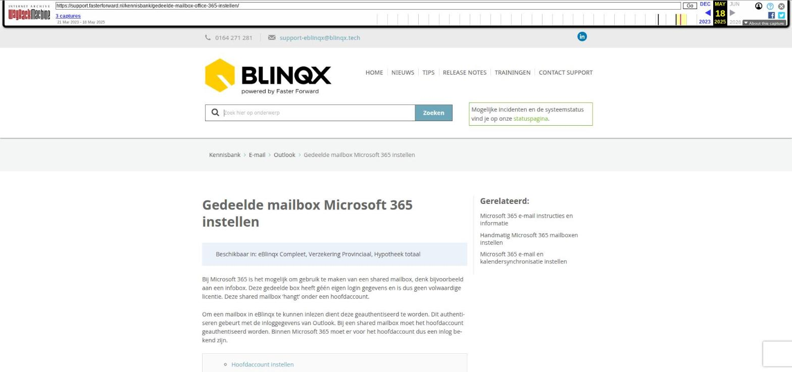

Gedeelde mailbox Microsoft 365 instellen

Tekstinhoud
Gedeelde mailbox Microsoft 365 instellen
Beschikbaar in: eBlinqx Compleet, Verzekering Provinciaal, Hypotheek totaal
Bij Microsoft 365 is het mogelijk om gebruik te maken van een shared mailbox, denk bijvoorbeeld aan een infobox. Deze gedeelde box heeft géén eigen login gegevens en is dus geen volwaardige licentie. Deze shared mailbox 'hangt' onder een hoofdaccount.
Om een mailbox in eBlinqx te kunnen inlezen dient deze geauthentiseerd te worden. Dit authentiseren gebeurt met de inloggegevens van Outlook. Bij een shared mailbox moet het hoofdaccount geauthentiseerd worden. Binnen Microsoft 365 moet er voor het hoofdaccount dus een inlog bekend zijn.
Hoofdaccount instellen
Subaccount/shared mailbox instellen
Zowel hoofdaccount als subaccount
Bestaande mailbox omzetten naar gedeelde mailbox
Hoofdaccount instellen
Volg onderstaande stappen om een hoofdaccount in eBlinqx toe te voegen, indien deze nog niet aanwezig is.
Let op: niet iedereen heeft het recht om dit te doen. Als je hier geen recht tot hebt, neem dan eerst contact op met de interne eBlinqx beheerder van je organisatie.
Maak eerst een nieuw e-mailadres aan. Ga hiervoor naar het startscherm van de e-mailmanager en druk daar op de '+'
Kies rechts bij type 'Office 365'
Zet 'gedeelde account' op ja
De volgende melding wordt dan zichtbaar: Er is nog geen Office365 mailbox aangemaakt dat aangemerkt is als hoofdaccount. Klik hier om een hoofdaccount aan te maken.
Klik op 'klik hier' om naar het scherm te gaan. Hier vul je het e-mailadres van het hoofdaccount in.
Ons advies is om 'Verstuur via Office365' op 'Ja' te zetten. De e-mails worden dan verzonden vanuit de uitgaande server Microsoft 365. Het is dan niet nodig om de SPF, DMARC en DKIM in te stellen. En de e-mails die verzonden zijn vanuit eBlinqx zijn ook zichtbaar in de verzonden map in Microsoft 365, bijvoorbeeld als je deze bekijkt op je telefoon. Zet je deze instelling op 'Nee' dan zijn de verzonden items niet terug te zien in Microsoft 365 en is het noodzakelijk om de SPF, DMARC en DKIM in te stellen. Deze instelling geldt dan voor alle submailboxen die gekoppeld zijn aan het hoofdaccount. Let op: in Microsoft 365 moet het voor de submailboxen zo ingesteld staan dat ze mogen versturen. Dit dien je zelf of jouw ICT-beheerder te controleren in Microsoft 365.
Vervolgens klik je op 'opslaan en authentiseren' om het hoofdaccount aan te maken en authentiseren
Subaccount/shared mailbox instellen
Volg onderstaande stappen om de shared mailbox in te stellen:
Maak eerst een nieuwe e-mailadres aan. Ga naar het startscherm van de e-mailmanager en druk daar op de '+'
Vul links alle gegevens in
Kies rechts bij type 'Office 365'
Zet 'gedeelde account' op ja
Bij het hoofdaccount selecteer je het hoofdaccount waaronder de shared mailbox valt
Bij Office 365 gebruiker zie je in het dropdownmenu alle gebruikers/shared mailboxen die vallen onder het hoofdaccount. Selecteer hier de gebruiker/shared mailbox die je door eBlinqx op wilt laten halen
Zet interval op 5 minuten
Sla op met het opslaanicoon
Voeg via het tabblad Eigenaren de personen toe die de e-mailbox in eBlinqx in mogen zien
Zodra een hoofdaccount meer dan 100 subaccounts heeft dan komt er een extra zoekveld bij. Je dient dan het subaccount via dit zoekveld op te zoeken.
Zowel hoofdaccount als subaccount
Het kan zo zijn dat de e-mails die binnenkomen op het hoofdaccount ook door eBlinqx opgehaald moeten worden. Indien je van dit hoofdaccount een 'losse' e-mailbox aanmaakt en deze niet aanmerkt als gedeeld account dan wordt door eBlinqx alle e-mail die daarop binnenkomt binnen gehaald. Dus ook de e-mail die hoort bij de shared mailboxen.
Om dit voorkomen dien je het hoofdaccount ook als gedeeld account aan te maken. Bij het hoofdaccount selecteer je het hoofdaccount wat is aangemaakt. Bij Office 365 gebruiker selecteer je de gebruiker die ook het hoofdaccount is. Indien je het op deze manier inricht dan wordt alleen de e-mail opgehaald die op de gebruiker binnenkomt.
Bestaande mailbox omzetten naar gedeelde mailbox
Bestaande mailboxen met het type IMAP kunnen niet handmatig omgezet worden naar gedeelde mailboxen. Dit is een opdracht die ingepland moet worden. Neem daarvoor contact op met support-eblinqx@blinqx.tech.
Bestaande mailboxen met het type Office365 die nu als standaard e-mailbox zijn aangemaakt kunnen wel handmatig omgezet worden. Let op: het is dan wel belangrijk dat in Outlook alle e-mailboxen met de juiste settings staan ingesteld. Hier kan jouw ICT-beheerder bij helpen. Je neemt de volgende stappen om deze om te zetten:
1. Bij de e-mailboxen die als gedeelde mailbox of hoofd mailbox ingesteld moeten worden trek je de authenticatie in. Dit kan via de betreffende e-mailbox – hamburgermenu – Toegang Office365 intrekken
2. In de e-mailmanager maak je een hoofdaccount aan. Hier lees je hoe je dit kunt doen.
3. In de standaard mailboxen die om wilt zetten naar een gedeelde mailbox zet je het veld 'Gedeeld account' op 'Ja'
4. Je kies selecteert het hoofdaccount en vervolgens het gedeelde e-mailadres (wat voorheen als standaard was ingesteld voor deze mailbox)
Het kan zijn dat het hoofdaccount ook een gedeeld account is. Dus dat er e-mail op dit hoofdaccount binnenkomt die je ook in eBlinqx binnen wilt halen. Dan moet je het hoofdaccount ook als gedeeld account instellen. Hier lees je daar meer over.
Laatste update: 13 mei 2025
Was deze informatie nuttig?
Ja Nee